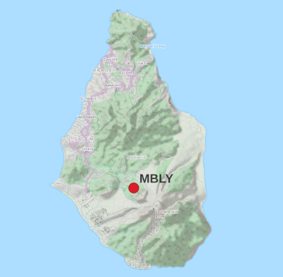
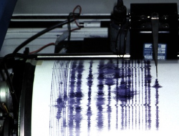

The plot shows the last six hours of data from an MVO seismic station located at Lee's Yard, Montserrat.
This page is for information only. Any interpretation given here is provisional and subject to change.
Each horizontal trace shows 10 minutes of ground movement data, sampled 200 times every second.
The latest data is on the bottom line.
Large signals are cropped and plotted in red
Local time is shown on the left margin of the plot.
The time of a signal is obtained by adding the time along the bottom scale to the time for that line given in the left margin.
Seismologists like to work in Universal Time (UTC), which is shown on the right margin of the plot.
The twitter feed on the right has comments from MVO about interesting signals, with their times of occurrence. You won't get comments for every single blip and wiggle.
This page updates automatically every minute.
Plot showing the last 24 hours of data
|
If there is no Twitter feed above, it's Twitter's fault. Try reloading the page.

The plot shown here mimics the plot drawn when you wrap a piece of paper around a rotating drum and slowly move the pen along its length. We still call it a "helicorder" or "drum" plot.

|